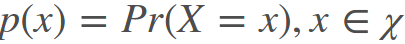
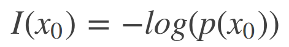
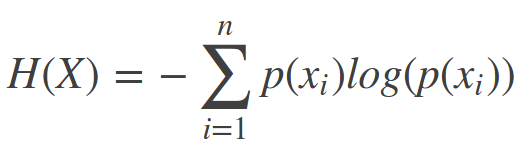
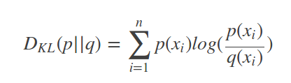

交叉熵度量的是两个概率分布的差异。
要理解交叉熵，有很多小概念需要理解。
信息量，一个事件发生的概率越大，事件发生携带的信息量越小，发生的概率越小，事件发生携带的信息量越大。比如太阳从东边升起，这个事件如果发生了，我们可以从这个事件中获得的信息几乎是没有的。但是，如果哪天太阳从西边升起了，那么我们从这个事件中获得的信息量是极大的，一定发生了什么，或者即将发生什么，才造成了这个事件发生。
假设X是一个离散型随机变量，概率分布函数为：

则定义X = x0事件发生携带的信息量为：

若p(x0)为0，也就是事件x0是不可能发生的事件，但是它却发生了，那么这个事件的信息量是无穷大的，I(x0)的值无穷大，如果p(x0)为1，也就是事件x0是一定会发生的事件，那么这个事件的发生是不带信息量的，I(x0)的值是0。
另外，信息量可以这样理解 [2]：
Information quantifies the number of bits required to encode and transmit an event.
信息量可以被理解为，传输或表达这个信息需要的编码的位数。
信息熵，则是信息量的期望值：

参考[3]里给了一个例子：

每次开电脑，都可能会产生三种状况，电脑正常开机的概率是0.7，电脑无法开机的概率是0.2，电脑爆炸的概率是0.1。那么每次开机，得到的信息量的的期望值是：

如果是二项分布，那么信息熵的计算可以简化为：

事件的概率不均，信息熵较小，若各个事件发生的概率一样，信息熵较大。
信息熵在[2]中的描述为：
Entropy is the number of bits required to transmit a randomly selected event from a probability distribution.
熵是表达或者传输一个遵循特定概率分布的随机事件需要的位数，个人觉得the number of应该改成the average number of，位数前面应该有个平均，和期望的概念对应上。但也可能是我哪里理解错了。
相对熵(relative entropy)，又称之为KL散度(Kullback-Leibler (KL) divergence)，公式：

相对熵的目标是：计算用P描述目标问题，比Q描述目标问题能获得的信息增量。
如果分布P和分布Q是一样的，那么相对熵是0，如果不一样，相对熵大于0，越大，表示两种分布之间的差距越大。
在机器学习的项目中，通常P表示真实的分布，即需要训练模型达到的分布，Q是现在用的模型预测的分布。
相对熵在参考[2]中的描述是：
In other words, the KL divergence is the average number of extra bits needed to encode the data, due to the fact that we used distribution q to encode the data instead of the true distribution p.
— Page 58, Machine Learning: A Probabilistic Perspective, 2012.
交叉熵是，当我们用分布q来替代事件真实遵循的分布p时，传输和表达事件时，比使用分布p多需要的平均位数。也就是q是我们用的分布，p是事件真实遵循的分布，用q的话，比用p需要更多的位数来表达和传输这个事件，平均多多少呢，交叉熵就是这个多出来的多少。
交叉熵(Cross entropy)，将相对熵公式变形：

前半部分是信息熵的负值，后半部分则是交叉熵，交叉熵的公式是：

因为P的信息熵是一定的，那么其实是可以省略这部分计算的，交叉熵和相对熵的意义是一样的。只是最后计算出的值，区间不一样。
交叉熵在参考[2]中的描述是：
…, the cross entropy is the average number of bits needed to encode data coming from a source with distribution p when we use model q, … — Page 57, Machine Learning: A Probabilistic Perspective, 2012
交叉熵是当你用模型q来预测分布p时，表达和传输事件需要的平均位数。
以下定义来自参考[2]，俺就不翻了:
Cross-Entropy: Average number of total bits to represent an event from Q instead of P. Relative Entropy (KL Divergence): Average number of extra bits to represent an event from Q instead of P.
Cross-Entropy Loss 和 Softmax Loss
毫无疑问，交叉熵可以用作损失函数，且比起MSE，MAE，要优秀不少，
… using the cross-entropy error function instead of the sum-of-squares for a classification problem leads to faster training as well as improved generalization. — Page 235, Pattern Recognition and Machine Learning, 2006.

结合上面猫狗分类的案例，假如有一张猫图输入，P是[1, 0], Q是[0.71, 0.29]，交叉熵的计算为：
H(P, Q) = – (P(cat) * log(Q(cat)) + P(dog) * log(Q(dog)))
值得注意的是，在很多多分类问题中，不论有多少类，P不论有多少个元素，都只有一个为1，其他都为0，所以交叉熵的计算可以化简，也就是说如果P(cat)为1，那么交叉熵的结果和Q(dog)，Q(car)，Q(any other)是无关的：
H(P, Q) = – log(Q(cat))
因此，如果Q(cat)是用Softmax Function计算出来的，那么H(P, Q)计算得到的就是该样本在该模型下的Softmax Loss。
Softmax Loss的完整公式如下：

N是样本数量，n是class的数量，特征向量的长度为d，Wj是W的第j列，和b一起是获得特征向量的全连接层，W是d*n，bj的长度是n。log后面则是用Softmax Function计算出的‘Q(cat)’。
因此，其实本来没有什么Softmax Loss的概念，这个公式是在多分类任务中使用Softmax Function+Cross Entropy loss产生的。
Cross Entropy Loss 和 Log Loss [4]
她俩在解决二分类问题的时候，其实是一回事，不服气的看公式：

这个公式既叫Binary Cross-Entropy，也叫Log Loss，y是label，p(y)是预测结果，符号和之前的公式没有一一对应，看的时候注意一下。
Log Loss的推导基于最大似然估计(Maximum Likelihood)和伯努利分布(Bernoulli distribution)，有机会写一篇。
那么Cross Entropy的值为多少时，表示预测的结果还挺准确的呢？这里参考[2]给了个一些参考，具体问题还要具体分析。
Cross-Entropy = 0.00: Perfect probabilities. Cross-Entropy < 0.02: Great probabilities. Cross-Entropy < 0.05: On the right track. Cross-Entropy < 0.20: Fine. Cross-Entropy > 0.30: Not great. Cross-Entropy > 1.00: Terrible. Cross-Entropy > 2.00 Something is broken.
参考：
[1] Thomas Wood，Softmax Function Definition, DeepAI
[2] Jason Brownlee，A Gentle Introduction to Cross-Entropy for Machine Learning，2019
[3] 史丹利复合田，一文搞懂交叉熵在机器学习中的使用，透彻理解交叉熵背后的直觉，CSDN，2018
[4] Daniel Godoy, Understanding binary cross-entropy / log loss: a visual explanation, Towards Data Science, 2018

Comments